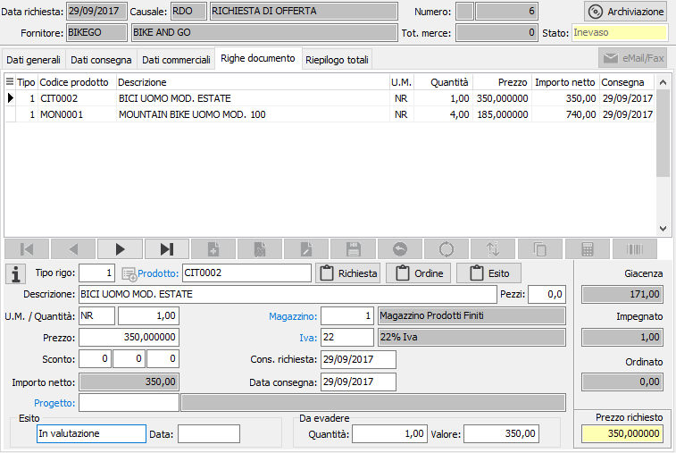
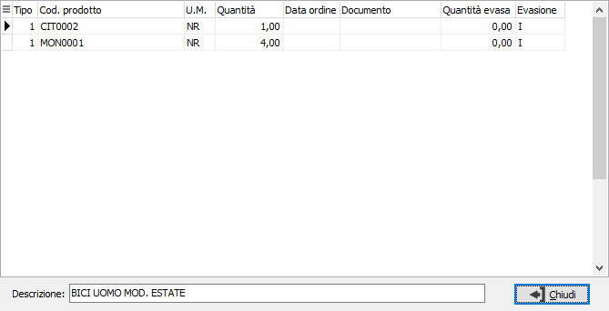
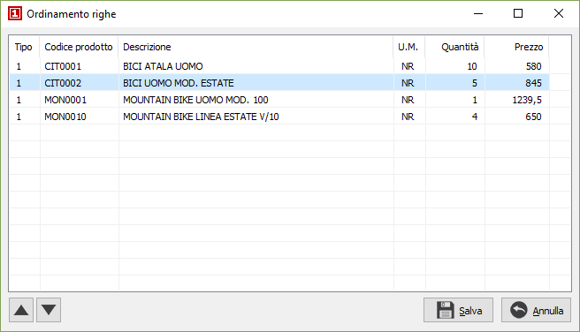

Utilizzando
il pulsante presente accanto al tipo rigo compare la seguente finestra:
Utilizzando
il pulsante presente accanto al tipo rigo compare la seguente finestra:Righe documento
In questa finestra video è possibile inserire le varie righe della richiesta di offerta. È possibile inserire righe relative ad articoli codificati, ad articoli non presenti in magazzino, ad omaggi di varia natura e descrittivi. Vi sono poi tipi rigo riservati agli articoli provvisori propri della gestione richieste di offerta.
La maschera video è articolata su due sezioni: la sezione inferiore visualizza il pannello di input che contiene anche l'indicazione del prezzo richiesto, dell'esito e della parte ancora da evadere, mentre la griglia della sezione superiore visualizza le righe inserite.

TIPO RIGO: codice
numerico presente sulla tabella dei tipi rigo utilizzato per definire
il tipo di rigo che si vuole inserire. Sul campo sono attive le funzioni
di ricerca (F9). Utilizzando
il pulsante presente accanto al tipo rigo compare la seguente finestra:

Da questa finestra è possibile utilizzando i criteri di selezione visualizzare, tramite il pulsante Selezione, un elenco di prodotti che è possibile inserire nel documento. Se nella configurazione del modulo standard è stato impostato il campo "N. mesi per ricerca prodotti movimentati" viene attivata la data "Movimentati dal" che permette di selezionare solo gli articoli movimentati dalla data indicata, in questo caso nella quantità viene visualizzata la quantità dell'ultimo documento. Per ogni prodotto visualizzato è possibile impostare una quantità, che sarà riportata sul rigo del documento; se la quantità viene impostata a zero il prodotto non sarà inserito nel documento. E' possibile anche selezionare o deselezionare il prodotto agendo con il doppio clic del mouse sulla riga del prodotto stesso, la selezione porta la quantità a 1; le righe che saranno importate sul documento appariranno di colore giallo chiaro.
PRODOTTO: campo alfanumerico per inserire il codice dell’articolo. Il campo è attivo solo per i tipi di rigo che prevedono l'accesso al prodotto. Sul campo sono attive le funzioni di ricerca (F9) ed accesso rapido alla tabella (CTRL+W). Tramite il tasto funzione F11 si può accedere alla finestra relativa alla Selezione descrizioni prodotti.
DESCRIZIONE: campo alfanumerico di 60 caratteri per descrivere il prodotto. In caso di articoli codificati, il campo viene compilato automaticamente con la descrizione dell’articolo in esame, che è tuttavia modificabile a cura dell’utente. In caso di tipo rigo che identifichi righe descrittive, sul campo è attiva la ricerca sulla tabella dei Testi fissi documenti, che consente di acquisire testi precedentemente inseriti ed assegnati ad un codice.
NOTE RICHIESTA: bottone che abilita un campo annotazioni, relative al rigo di documento attivo, che verranno stampate sul documento. Prima di confermare, è possibile richiedere la duplicazione del testo nelle note ordine apponendo l'apposita spunta. Nel caso la causale lo preveda (casella stampa descrizione estesa con segno di spunta) ed il prodotto abbia una descrizione estesa dichiarata non fissa (casella fissa in anagrafica articoli non spuntata), questa viene automaticamente riportata in questo campo.
NOTE ORDINE: bottone che abilita il campo annotazioni, relative al rigo di richiesta di offerta attivo, che verranno riportate e stampate sull'ordine a fornitore.
NOTE ESITO: bottone che abilita il campo annotazioni, relative al rigo di richiesta di offerta attivo, che derivano dall'esito dell'offerta PER LE RIGHE respinte/annullate.
UNITÀ DI MISURA: campo alfanumerico di 3 caratteri, presente nella tabella Unità di misura, per descrivere l’unità di misura del prodotto. Per gli articoli codificati viene presentata automaticamente la prima unità di misura presente in anagrafica. L’unità di misura può essere modificata dall’utente, ma per gli articoli codificati vengono accettati solo i codici delle unità di misura presenti in anagrafica articolo. Se viene specificata la seconda o la terza unità di misura presente in anagrafica articoli, l’impegnato fornitori viene calcolato in funzione del fattore di conversione relativo. Sul campo sono attive le funzioni di ricerca (F9) ed accesso rapido alla tabella (CTRL+W). Tramite il tasto funzione F12 si può accedere alla finestra relativa alla selezione di una unità di misura con conversione della quantità; tramite i tasti CTRL+F12 si può accedere alla finestra relativa alla conversione di una unità di misura all'unità di misura del documento.
LUNGHEZZA: campo visualizzato solo se in configurazione è attiva la gestione delle misure. Consente di impostare la prima misura (lunghezza) per il calcolo della quantità.
LARGHEZZA: campo visualizzato solo se in configurazione è attiva la gestione delle misure. Consente di impostare la seconda misura (larghezza) per il calcolo della quantità.
ALTEZZA: campo visualizzato solo se in configurazione è attiva la gestione delle misure. Consente di impostare la terza misura (altezza) per il calcolo della quantità.
PEZZI: campo numerico che indica la seconda quantità del documento, se attivato da configurazione. Se attiva la gestione delle misure, il valore del campo viene utilizzato per calcolare la quantità principale.
QUANTITÀ: campo numerico per inserire la quantità per l'articolo attivo. Se attiva la gestione del dettaglio quantità è presente il bottone dettaglio, a destra del campo, tramite il quale sarà visualizzata la relativa finestra di dettaglio quantità; l'attivazione della finestra avviene comunque in automatico al momento dell'accesso al campo quantità. In caso di attivazione delle misure, la quantità viene visualizzata automaticamente come risultato della moltiplicazione fra i quattro valori precedenti.
PREZZO: campo numerico per inserire il prezzo. Per gli articoli codificati viene presentato il prezzo ricercato in base alla tabella di configurazione prezzi/sconti, oppure, se si tratta un prodotto provvisorio, quello eventualmente presente sul listino provvisorio. Il prezzo proposto può essere modificato dall’utente. Sul campo agisce la funzione F11 che abilita la vista sugli ultimi prezzi praticati al fornitore attivo relativamente al prodotto indicato, per consentirne l’eventuale acquisizione. La vista non viene abilitata se non esistono prezzi relativi all’articolo in esame. Non è invece consentita l’acquisizione del prezzo se l’articolo attivo è presente e valido nell’eventuale listino del fornitore. E' presente anche la funzione F12 che consente di ripristinare il prezzo originale dell'articolo; la funzione CTRL+F11 che visualizza una finestra di informazioni economiche relative al prodotto (provenienza dei prezzi, sconti ecc.). Inoltre, per le righe di tipo servizio/recupero spese, con la funzione CTRL+F12 è possibile richiamare una maschera per assegnare delle spese in percentuale al valore delle righe inserite fino a quel momento. Al momento dell'inserimento il prezzo inserito viene assunto come prezzo richiesto e successivamente mostrato nel riquadro in basso a destra. Il campo sarà comunque richiesto ed aggiornato in fase di esito.
SCONTI O MAGGIORAZIONI: campi, abilitati o meno in relazione al numero sconti previsto in configurazione, per inserire una percentuale di sconto o maggiorazione. Se esistenti, vengono proposte le percentuali di sconto esistenti in anagrafica fornitori, in anagrafica articoli o in listini fornitori. A conferma dell’ultimo sconto, viene visualizzato l’importo netto di rigo. I campi, se presenti, saranno comunque richiesti ed aggiornati in fase di esito.
MAGAZZINO: codice del magazzino aziendale in cui deve essere disposta la merce successivamente all’evasione dell’ordine. Viene proposto il magazzino presente sul prodotto o se non presente quello di configurazione. Sul campo sono attive le funzioni di ricerca (F9) ed accesso rapido alla tabella (CTRL+W).
CODICE IVA: codice I.V.A. memorizzato sull'articolo. Sul campo sono attive le funzioni di ricerca (F9) ed accesso rapido alla tabella (CTRL+W).
CONSEGNA RICHIESTA: campo data per l’inserimento della data di consegna di rigo richiesta al fornitore.
DATA CONSEGNA: campo data per l'inserimento della data di effettiva di consegna di rigo pattuita con il fornitore. È consigliabile inserirla (comunque viene proposta la data della richiesta di offerta). Il campo sarà comunque richiesto ed aggiornato in fase di esito.
CODICE PROGETTO: Codice alfanumerico di 15 caratteri che definisce il progetto di riferimento. Sul campo sono attive le funzioni di ricerca (F9) ed accesso diretto alla tabella (CTRL+W). Il campo è presente solo se attiva la gestione progetti e configurato il progetto sul rigo.
La sezione relativa all'esito mostra lo stato del rigo in relazione alle fasi successive all'inserimento; dopo l'inserimento il rigo appare in stato di valutazione, successivamente tramite la procedura di esito potrà essere accettato dal fornitore, approvato, respinto dal fornitore o annullato; la data presente si riferisce all'ultima variazione dello stato di esito.
Nella finestra video è possibile scorrere le righe del documento, visualizzando quella attiva nel pannello di input, tramite i tasti CTRL+freccia giù e CTRL+freccia su. Un rigo di documento visualizzato nel pannello di input può essere eliminato, ancorchè privo di trattamenti successivi, premendo il bottone Elimina della barra strumenti del pannello di input; è possibile inserire un rigo vuoto immediatamente successivo al rigo attivo premendo il bottone Nuovo della barra strumenti del pannello di input.
 Tramite il pulsante Dettaglio evasione
rigo, è possibile visualizzare lo stato di evasione del rigo. Nella finestra
compaiono i riferimenti ai documenti con cui è stato evaso parzialmente
o totalmente il rigo della richiesta di offerta.
Tramite il pulsante Dettaglio evasione
rigo, è possibile visualizzare lo stato di evasione del rigo. Nella finestra
compaiono i riferimenti ai documenti con cui è stato evaso parzialmente
o totalmente il rigo della richiesta di offerta.

 Tramite il pulsante Ordina è possibile modificare
l'ordinamento delle righe del documento spostandole singolarmente tramite
gli appositi tasti di scorrimento oppure selezionando e trascinando le
singole righe. La pressione sul pulsante Salva determina la modifica effettiva
dell'ordinamento.
Tramite il pulsante Ordina è possibile modificare
l'ordinamento delle righe del documento spostandole singolarmente tramite
gli appositi tasti di scorrimento oppure selezionando e trascinando le
singole righe. La pressione sul pulsante Salva determina la modifica effettiva
dell'ordinamento.

 Tramite il pulsante Copia è possibile inserire nel
documento righe estratte da altri documenti, uguali o di altro tipo, i
parametri vengono proposti in base alla Configurazione
copia righe documenti.
Tramite il pulsante Copia è possibile inserire nel
documento righe estratte da altri documenti, uguali o di altro tipo, i
parametri vengono proposti in base alla Configurazione
copia righe documenti.

La finestra permette di specificare diversi criteri di selezione, tra cui il tipo di documento, l'anno, la causale, il numero, il tipo fornitore (provvisorio o effettivo), il fornitore e l'eventuale periodo di analisi; è comunque necessario premere il pulsante Seleziona che visualizzerà nella griglia sottostante l'elenco dei documenti coerenti con i parametri di selezione richiesti. Premendo il pulsante Dettaglio vengono visualizzate le righe del documento selezionato. è presente il pulsante "Cambia ditta" che consente di selezionare un'altra azienda da cui copiare i dati; quando l'azienda è diversa dalla corrente il pulsante appare col testo evidenziato e sotto viene mostrato il nome dell'azienda.

In questa sezione è possibile selezionare le righe da inserire nel documento attivo spuntando le caselle relative, oppure utilizzando il menù abbinato al tasto destro del mouse, che prevede le voci seleziona tutto e deseleziona tutto. Premendo il pulsante Copia le righe selezionate vengono inserite nel documento attivo. Al momento della copia sarà visualizzato un pannello con le opzioni di copia: assegnare prezzo/sconti, assegnare descrizione e unità di misura del prodotto, assegnare il magazzino, assegnare i conti; se le opzioni sono spuntate verranno effettuate le assegnazioni in base ai dati del nuovo documento, altrimenti rimarranno i valori originali del documento da cui si sta copiando.
Tramite questo pulsante è possibile rinumerare le righe del documento.
 Tramite il pulsante Barcode, se presente ad attivo
il relativo modulo è possibile inserire nel documento dati
provenienti da lettori ottici.
Tramite il pulsante Barcode, se presente ad attivo
il relativo modulo è possibile inserire nel documento dati
provenienti da lettori ottici.